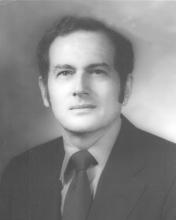

Please note: the AAS Obituaries are temporarily being hosted on this website while their full content is being ingested into the PubPub publishing platform newly adopted by the Bulletin of the American Astronomical Society. When the migration is complete, your existing links will take you to the final, migrated content. Contact peter.williams@aas.org with any questions.
Robert Fleischer (1918-2001)
Robert Fleischer was born 20 August 1918 to Leon and Rose Fleischer in Flushing, NY. He was educated at Harvard, receiving his BS in 1940, MA in 1947, and PhD in 1949. He specialized in geophysics and solar-terrestrial relations. Fleischer joined the faculty at Rensselaer Polytechnic Institute advancing from Assistant to Full professor in 1958. As Director of the RPI Observatory, Fleischer attempted to bring modern astronomy to the institutions in the Albany area by procuring the funds to build a radio telescope. He left for the National Science Foundation (NSF) before the observatory was completed. It is a testament to his character that without his enormous energy, organizational, and fundraising abilities, the radio telescope project languished after he left.
Fleischer joined the NSF in 1962 as the Program Director for Solar-Terrestrial Research. He was the government-wide Coordinator for the International Quiet Sun Years, and coordinated the 1966 South American Eclipse expeditions. Thereafter, he was appointed Deputy Head of the Office of International Science Activities.
Fleischer is most notably remembered as the head of the Astronomy Section at the National Science Foundation. He brought astronomy into its own at NSF and involved the community in a major way through use of advisory committees. He was dedicated to helping the astronomical community understand the funding system, the political environment, and the various factors in how money is allocated. Fleischer truly believed in the concept that scientists should be making the important decisions about their field. He was instrumental in injecting science into the oversight of the National Observatories.
Relations with the community say a lot about the man, the complexities of his character, and the forces that drove him. Fleischer was passionate in his beliefs and in his devotion to doing the best for astronomy. His strong approach and belief in himself served him well in many ways, but caused him grief from time to time.
Fleischer wrestled with the issue of how to assemble a committee of busy people who had not thought about the problems at hand, provide them with enough background to enable them to comment effectively, and structure any discussion so as to provide effective advice to the agency. Yet, he had a strong sense that NSF, having the broad overview of the situation and a better understanding of the politics of funding, was in a better position to make major decisions than any group of scientists that might be assembled. This ultimately led to confrontation with the astronomical community.
Fleischer was also of the opinion that perhaps the most important advice a committee can give comes, not from the official pronouncements but, from the informal communication which happens when any group of people get together---the one-on-one discussions over coffee, the brief comments heard around the table, and even the general sense of body language. He stressed this to the staff before each meeting. Ironically, his zeal to run an effective meeting made him less receptive to the informal, and even some of the formal, communications from the Committee.
Preparation for meetings of the NSF Astronomy Advisory Committee was intense. The agenda was structured so as to present a maximum amount of information to the Committee. Once the agenda was set, the meetings followed them strictly. As chairman of the Advisory Committee, Fleischer ran the meeting with an iron hand, sometimes cutting off discussion that the Committee might have felt valuable, adding to the sense of the Committee's frustration. As a consequence, the meetings actually had a negative effect on the community. Although Fleischer was a strong believer in helping and encouraging his staff, and arranged for the entire staff of the Astronomy Section to attend both internal and off-site management training courses, his tendency toward an autocratic personal style was unsettling. Pressures from the community and within NSF eventually led to his being transferred from the Astronomy Section in 1975.
Shortly thereafter, Fleischer retired from the government and established his own firm, The Greylock Center, an educational management consulting group that specialized in helping educational institutions in understanding how to deal with the federal government. In this, he was eminently successful. His knowledge of procedures, the timing of the federal budget cycle, and the various factors that are important in making funding decisions were a major asset in his work. And, he thrived on educating newcomers about dealing with the federal bureaucracy. He eventually closed his consulting business in 1984 and retired to a farm in Keedysville, Maryland, where he raised Angus cattle with his third wife, Marie.
Fleischer passed away 14 September 2001 in Raleigh, NC, where he was doing his best to cope with Alzheimer's disease.
Photo courtesy of Marie Fleischer
Obituary written by: Peter B. Boyce, Mary E. Saffell
BAAS Citation: BAAS, 2003, 35, 1460
SAO/NASA ADS Bibcode: 2003BAAS...35.1460B